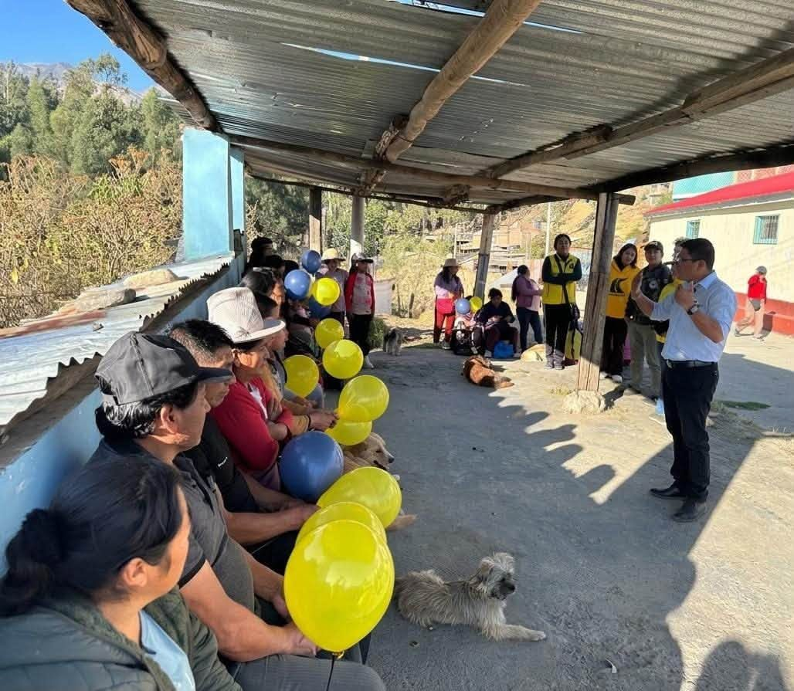
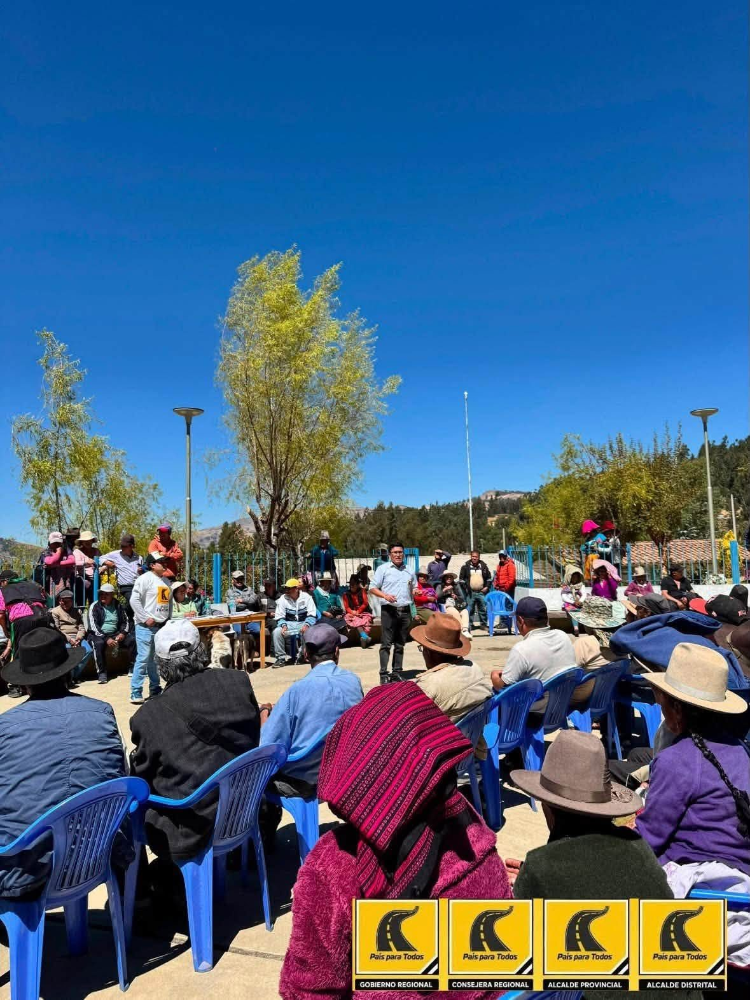
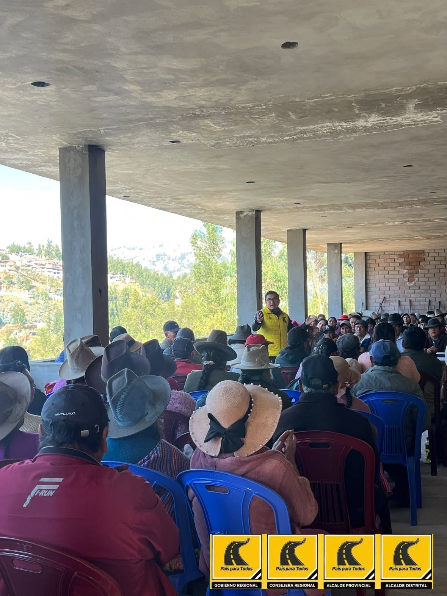

Jimmy Isidro
Alcalde de IndependenciaExperiencia que construye.
Juventud que transforma.
Jimmy Isidro te visita
Dame la oportunidad de escucharte y ganarme tu confianza. Invítame a tu hogar, barrio o comunidad para conversar sobre sus necesidades y las soluciones que juntos podemos impulsar por Independencia.
Tres pasos, uno a la vez
Invita a tres vecinos
Que cada persona que conozca la aplicación la comparta con tres más de su calle o su caserío.
Escanea y abre la APPEncuentra tu zona
Escribe el nombre de tu caserío o barrio, o elige una de las tres zonas del distrito.
—
—
—
Elige cómo quieres sumarte
Cada opción abre un formulario oficial. Toma dos minutos y funciona con datos móviles.
Grupo de WhatsApp
Recibe actividades, novedades y contenidos para compartir con tus vecinos. Puedes retirarte cuando quieras.
Unirme al grupoPersoneros y personeras
Cuida el acta de tu mesa el día de la elección. Recibes capacitación y acreditación ante el Jurado Electoral Especial.
Quiero ser personeroMe sumo a Jimmy
Registra voluntariamente tu respaldo y recibe información de la campaña en tu zona.
Registrar mi apoyoProfesionales y técnicos
Ingeniería, salud, educación, derecho, agronomía, tecnología y oficios: el plan se ejecuta con gente del distrito.
Sumar mi experienciaCinco compromisos
Esto es lo que respondes cuando un vecino te pregunta qué propone Jimmy.
Primero escuchar.
Luego comprometerse.
Esta aplicación ordena la información territorial, las propuestas y las formas de participación para acercar la campaña a cada ciudadano de Independencia.


